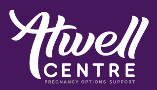

Links
We Need a Law
We mobilize Canadians and persuade our political leaders to pass laws that protect children before birth.
Canadian Centre for Bio-Ethical Reform
The Canadian Centre for Bio-Ethical Reform is an educational human rights organization dedicated to speaking out on behalf of the youngest and most vulnerable members of the human family.
Hamilton Against Abortion
Hamilton Against Abortion (HAA) is a grassroots movement dedicated to educating local individuals on the realities of abortion. We do this by equipping the Hamilton Region on how to defend the pro-life position and by taking the message to the streets. We use abortion victim imagery along with other resources, and unmask the truth of abortion to the general public.
Hamilton Right to Life
Hamilton Right to Life is an educational non-political, non-denominational organization (Charitable Registration No.: 118951862RR0001). We promote respect for all human life from conception to natural death through education.
Atwell Centre

At Atwell, we are here to walk you through all the options around your unexpected pregnancy and address any questions you may have. We provide free medical-grade pregnancy tests and pregnancy confirmation through ultrasound. We will be with you every step of the way in interpreting your results.
Resource links from Pro-life Hamilton